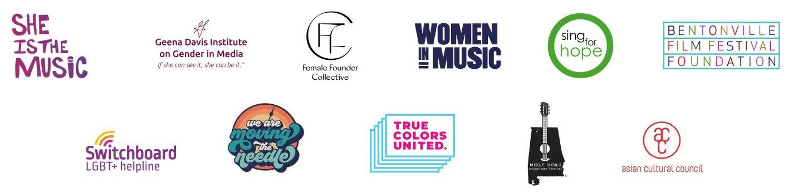
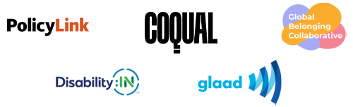

We help people feel included by championing fun as a way to share our true-self and connect with others.
M&M’S is a chocolate brand on a mission. We believe in championing the power of fun to create a world where everyone feels they belong.
We’ve been a fun brand for a long time, but now it’s time to take that FUN to the next level. Make it meaningful. Make it powerful. Make it a movement.
A movement that unites the masses by inviting everyone to be part of something bigger than just fun for fun’s sake. After all, fun is meant to be inclusive, for all.
Better yet, for all Funkind. This is our rallying cry to drive a global movement to remind people everywhere that, despite our differences, we all belong to a community of humans that share one simple and powerful thing in common: fun.
To foster this world of belonging, M&M’S® has also launched The M&M’S FUNd which is a global initiative intended to track the brand’s impact on its mission to increase the sense of belonging for 10MM by 2025.
The M&M’S FUNd provides resources, mentorship, opportunities and financial support in the arts and entertainment space to help ensure people have access to experiences where everyone feels they belong.
Because together, we can make this a reality for all Funkind.

our action to create a world where everyone feels they belong
The M&M'S FUNd offers resources, mentorship, opportunities and financial support in the arts and entertainment space to connect people and ensure they have access to experiences to increase a sense of belonging for 10 million people around the world by 2025
Since we kicked off our global purpose we've contributed millions to efforts and causes that are using the power of fun to bring us all closer together, laying the groundwork for lasting change.
We look forward to more collaborations with current and future trusted partners, to help us on our mission to create a world that is for all funkind.
.png)
Committed to creating a world where everyone belongs
With modern updates, including our refreshed spokescandies, we announced to the world a new global brand purpose - a world where we use the power of fun to help everyone feel like they belong.

.png)
.png)
Launched Projekt Open Mic
To make the German comedy scene more inclusive, M&M'S® put new voices in the spotlight, providing a new platform for up and coming comedians to launch their careers with the help of one of Germany's most popular entertainers.
Created M&M'S® FUNd Advisory Council
With expert help from organizations around the world, we established the M&M'S FUNd and the M&M'S FUNd Advisory council to help ensure our mission stays true to its purpose in both the big and the everyday moments.
.png)
Introduced Purple to further our purpose
Our crew got even more colorful with the launch of our first new character in over a decade, Purple! She inspires us to use our platform to increase visibility, and improve the gender balance in our cast, while reminding us to embrace our authentic selves.
Kicked off program celebrating women trailblazers who are Flipping the Status Quo
In the lead up to International Women's Day, M&M'S® released limited edition packs spotlighting our female spokescandies - launching a program meant to celebrate and support the next generation of women flipping the status quo.
 February 2023
February 2023
Super Bowl
Our Super Bowl campaign brought the fun back into the conversation in a new way. While there were many twists and turns along the journey - especially as the spokescandies took the chance to explore other passions - our purpose remained at the core, bringing us all together to share in laughter and fun.
To celebrate the official return of the M&M'S® spokescandies, the brand doubled down on its most recent initiative: supporting women who are flipping the status quo. The brand increased the number of $10,000 grants offered to change-making women from 10 to 20, putting the "fun" in funding their initiatives while increasing the opportunity for trailblazing women to champion a positive impact on society. The winners were identified in partnership with the M&M'S FUNd Advisory Council and spotlighted across M&M'S digital and social platforms on International Women's Day (Wednesday, March 8).